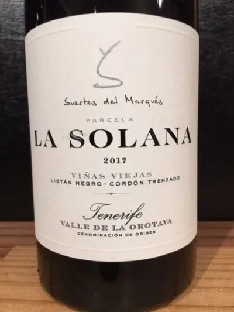

- Type
- Red Still, Dry
- Producer
- Suertes del Marques
- Vintage
- 2017
- Location
- Spain, Valle de la Orotava DO
- Grapes
- Listán Negro
- Alcohol
- 13
- Sugar
- NA
- Price
- 839 UAH
- Cellar
- N/A
Ratings
2022-08-15 - 7.40
Hehe, La Solana is like kissing an erupting volcano. Wait, stop imagining it! Bear with me for a while. In the nose, it has little fruits, mostly H2S, spices, wet cellar and pomegranate. Tasting it is like licking a stone covered with moss and shit (?!). Damn, H2S. Other than that, it’s delicate and tasty. Maybe it just needs much more aeration. Not sure what’s wrong with me, but I would like to taste it again.